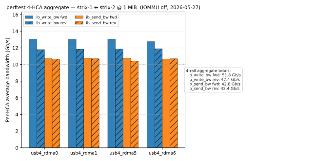
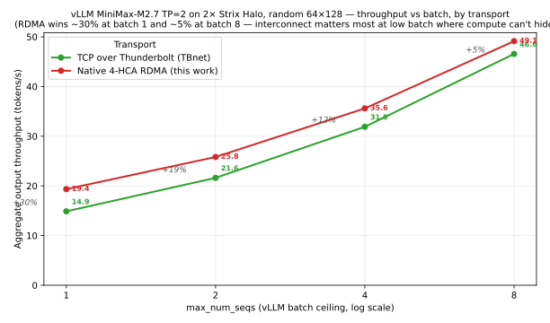
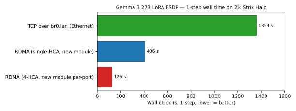

V. Closing
What this lets you do
So let's count our wins. We have an open-source driver which can:
- Pool bandwidth across multiple cables, and across both lanes of a single cable
- Implement
libibverbs, we can support vLLM, RCCL, MPI- anything that takes alibibverbsHCA - Demonstrate actual, real-world value for certain use-cases (finetuning, TP=2 inference)
- Mac support is minimal- we demonstrated our Soft-DMA transport works and integration with JACCL, simple compute- but no real workloads or reason for anyone to do this currently.
The three headline numbers, one chart each:
Raw interconnect — ~95 Gb/s bidi (~48 Gb/s per direction) at 1 MiB, 4-HCA aggregate, IOMMU off:

vLLM MiniMax-M2.7 (AWQ, ~230 B MoE / ~10 B active) TP=2 across both Strix boxes — a model that doesn't fit on a single Strix at all. RDMA wins ~30% over TCP-over-Thunderbolt at batch 1 and the gap narrows to ~5% by batch 8, as compute starts to amortize the interconnect cost:

Gemma 3 27B LoRA FSDP — 1359 s on Ethernet → 126 s on 4-HCA RDMA, a 10.8× speedup:

Why this matters for Hellas
The Hellas mission:
run whatever compute you want, wherever you want
More strictly, we want to bind useful computation to economic value without assuming the compute lives in a hyperscaler datacenter. That only works if ordinary people can bring ordinary hardware to the network and have it do non-trivial work.
This project does not solve that whole problem. It solves a smaller, annoying prerequisite: can cheap consumer boxes be wired together into something that behaves enough like a real AI cluster for existing software to use it?
The answer seems to be yes, at least in the messy research-prototype sense.
Status
This is not a supported Hellas product yet. It is a proof-of-concept for one piece of the stack: making commodity home hardware useful as a multi-node AI machine.
What works today:
- Linux ↔ Linux RDMA over USB4 between Strix Halo boxes
- Standard
libibverbsintegration, enough for vLLM/RCCL and FSDP experiments - Real workload wins where the network actually matters
- Partial Apple AD/FA57 interop, enough to prove the path exists
What does not work today:
- Catgrad integration
- Production support
- Safe unattended deployment
The claim here is narrow: if Hellas is going to make owner-operated compute useful, commodity machines need a way to pool memory and bandwidth locally. This experiment makes that look much less impossible than it did a few weeks ago.
Try it
- Code: https://github.com/hellas-ai/thunderbolt-ibverbs
- Built on Nix —
nix developfrom the project'sflake.nixgives you the patched kernel, the out-of-tree module, perftest, and a vLLM/RCCL environment in one shot. - Who should care: anyone running models on Strix Halo (or any AMD platform with USB4 ports), anyone building multi-box at-home inference, and kernel folks who care about the Thunderbolt subsystem.
- Discord: https://discord.gg/qHqZyuAa3u
- Find me on X: @0xBaltar